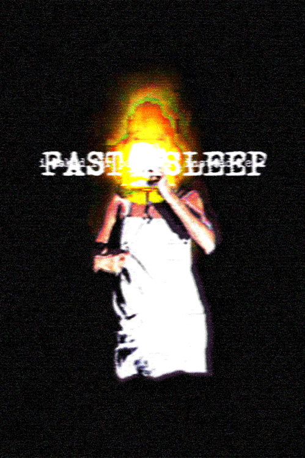
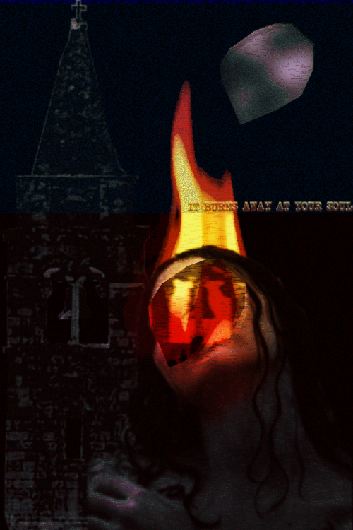
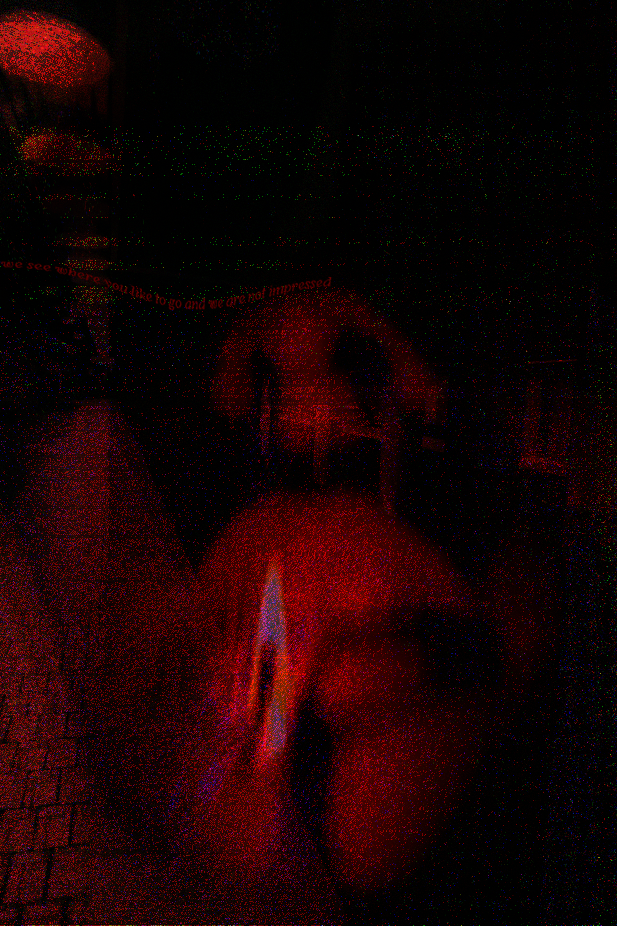

what is this?
MYDIGITALNIGHTMARES is an exploration of art based horror storytelling.
This started out as a simple poster design, but quickly branched out into a meditation on isolation, nostalgia, and the horror that can accompany these feelings.
It is reminiscent of the feeling of your teeth during a thunderstorm.
It evokes the feeling of being stuck somewhere you don't belong, and can't leave.
Remember, they watch you just as much as you watch them.
DIVINITY WON'T SAVE YOU NOW

I have always had an interest in religious horror, this is my manifestation of that. Heavy use of distortion and real hex code manipulation makes this a tricky piece to parse at first glance, but I wanted to inspire the feeling of being watched through your screen by this entity far beyond normal understanding.
This one keeps me up at night, sometimes.
FAST ASLEEP
I came into this piece with a strong idea. The flame engulfs the head entirely. I tried photos of real fire, but they didn't come through the way I liked. I stumbled upon this stock image of a lamp, lonely and in a dark room. I knew by looking at it, it was perfect. Blasting the contrast and saturation really made that image come to life in a way I wasn't expecting. The image flickers like a screen, yet still casts a shadow that reminds me of lightning in the distance.
IT BURNS AWAY AT YOUR SOUL
 This is an obvious companion piece to FAST ASLEEP, but with a more direct aproach to the message. Real hate and anger were poured into this, jagged cuts and thick fire dominate this scene. Everything feels wrong. The perspective isn't right. The man in the moon is being taken away. The bell is in her burning cut off face.
This one burns away at you too in a way, doesn't it?
WE SEE WHERE YOU LIKE TO GO
 Pixelated like vintage PC game. The haunting dithering makes this a personal favourite. The feeling of being watched here is so overwheling, yet it feels like you too are watching. The reflection makes the scene of the train station nearly impossible to make out. The scene of the train station makes the reflection impossible to ignore. This is another instance of intentional hex code manipulation.
Real corruption corrodes this composition completely.